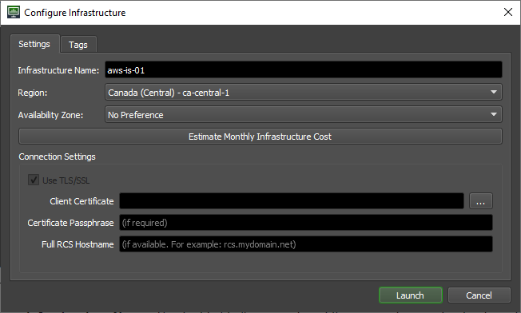
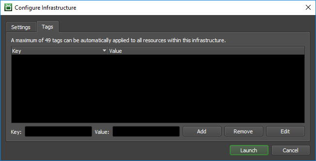

Note
While AWS Portal can enable cloud rendering in Deadline 10, AWS Deadline Cloud is a newer offering that has been built specifically for the cloud. It is a fully managed service that does not require installation or maintenance of infrastructure (e.g., repository, database, or license server). Worker fleet auto-scaling, asset synching, and licensing are all managed natively within AWS by Deadline Cloud. See here for more information on Deadline Cloud and its capabilities.
1. AWS Portal Infrastructure Overview¶
The AWS Portal infrastructure is your secure gateway between your on-premise repository and render assets and your cloud render nodes. It coordinates the communication of your cloud render Workers and your on-premise Repository. It also aids in the transfer of render assets to the correct Worker instance and return of any render output back to your on-premise network. It is an integral part of AWS Portal.
Currently, only one infrastructure is supported per on-premise render farm. If you currently have an infrastructure running, you do not need to start one and can skip ahead to Spot Fleet Creation.
You can find more information about AWS Portal in general here.
Warning
AWS Portal infrastructures do incur a cost when running. Please make sure that you check the estimated cost for running an infrastructure before you launch one. You can learn more about AWS Portal costs here.
1.1. Configure Infrastructure Dialog Overview¶
1.1.1. Settings Tab Overview¶
This is the dialog in which you will configure and launch your AWS Portal Infrastructure.
This is the main tab you will use when configuring an infrastructure.
Infrastructure Name: This text field allows you to set the name of your infrastructure. The infrastructure name is just used for a more human readable way of identifying your infrastructure. All infrastructures created are given a unique ID that will be assigned at the time of creation.
Region: Drop down list of available AWS Regions you can start your infrastructure in. Generally, you will want to choose the region that is closest to you geographically. You can learn more about AWS Regions and selection the right one here.
Availability Zones: Drop down list of AWS Availability Zones based on the Region you selected. We recommend the default selection of No Preference. You can learn more about AWS Availability Zones here.
Estimate Monthly Infrastructure Cost: Opens a webpage that will help you estimate the monthly cost of running an infrastructure. You can learn more about costs and pricing here.
Client Certificate: The client TLS certificate required to connect to your Remote Connection Server. This would have been generated or chosen during installation the Deadline Client installation if you selected the “Enable TLS (HTTPS)” option. (For example, the default path for a windows installation is
C:/Program Files/Thinkbox/Deadline10/certs/Deadline10RemoteClient.pfx)Certificate Passphrase: The passphrase of the client TLS certificate.
Full RCS Hostname: The full hostname of the machine that is running the Remote Connection Server.
1.1.2. Tags Tab Overview¶
The Tags tab allows you to add your own meta data to the resources acquired by your infrastructure. This is used to aid in the management of your fleet/resources. Tags can be very useful for cost allocation in billing. You can learn more about tags here and costs here.
Tag List: This is the list of tags that you currently have assigned to your infrastructure. You can select a row to Remove or Edit the entry.
Key and Value Fields: Enter in the key and value you want for a new tag in these text boxes.
Add: Adds the text that is currently in the Key and Value text fields when clicked.
Remove: Removes the currently selected tag key/value pair in the Tag List.
Edit: Opens a dialog that will allow you to edit the key and value fields of the currently selected key/value pair in the Tag List.
1.2. Next Steps¶
Now that you are familiar with the Configure Infrastructure dialog, we will go through the steps of opening it in the Deadline Monitor and Creating a Deadline AWS Portal Infrastructure.